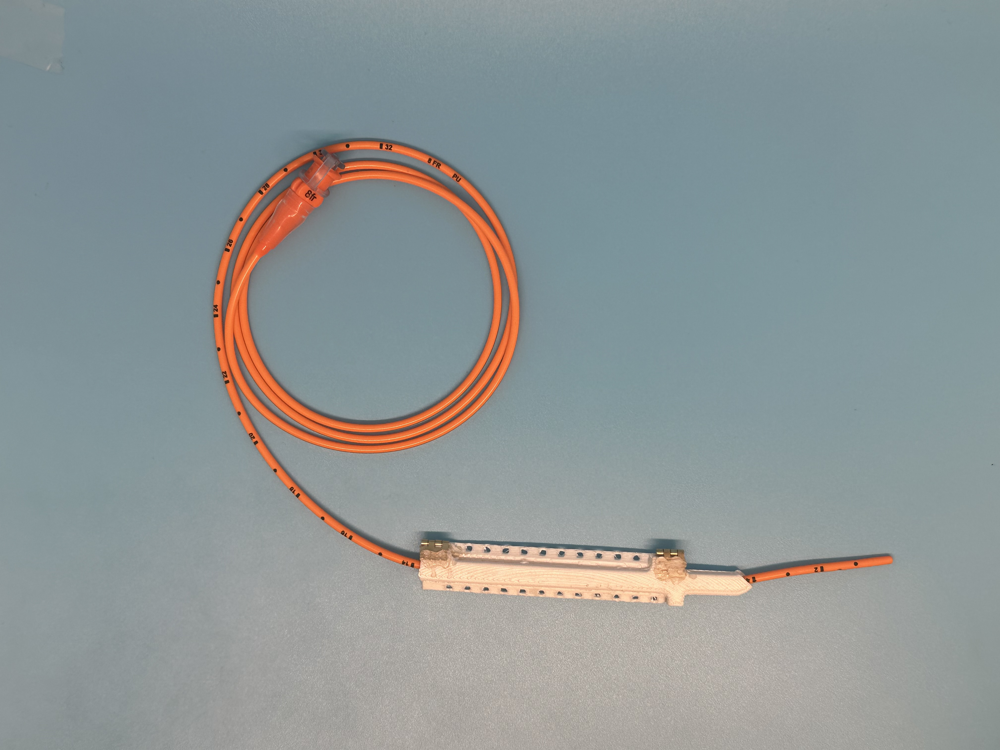

We received a patent to begin our project efforts.
Revision 1: Low resolution prototype. We used foamcore, felt, and elastic to create this revision

Revision 2: Clip Closed. This revision encloses the NG tube, while having a hinging mechanism to open, a clasp to secure the hinge, and sew holes to attach to the headgear. It was made with Polylactic Acid filament using a Fused Filament Fabrication method.

Full Revision 2

Image 3 Subtitle